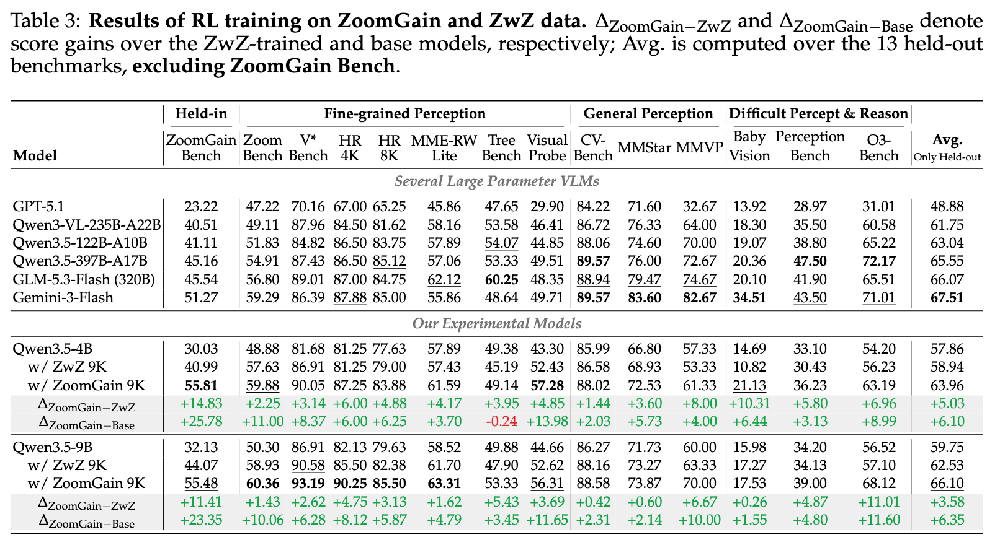
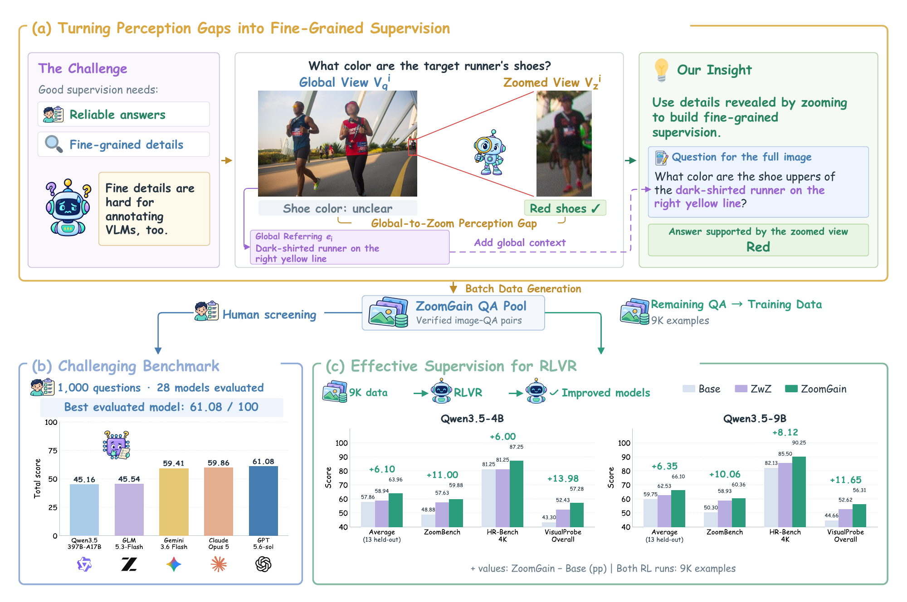
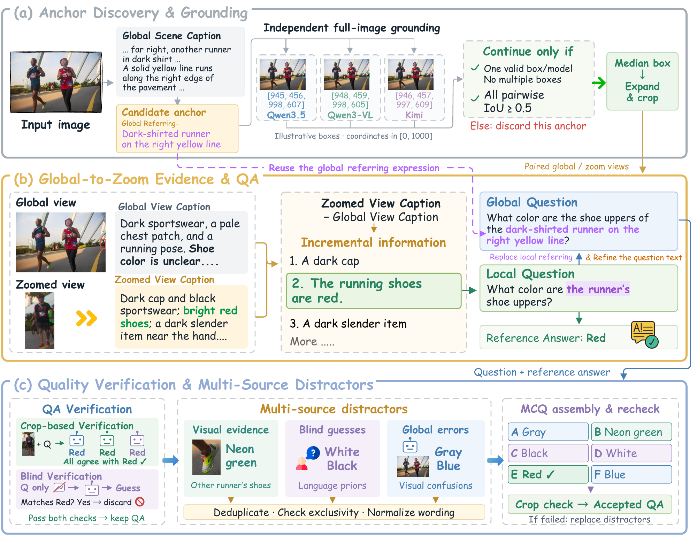

📈 Results of RL training on ZoomGain and ZwZ data

Results from Table 3 of the paper
📥 Download ZoomGain-9B
bashhf download inclusionAI/ZoomGain-9B --local-dir "./ZoomGain-9B"
🔍 ZoomGain
<strong>Mining Global-to-Zoom Perception Gaps for Fine-Grained Visual Supervision</strong>
💻 GitHub · 📄 Paper · 📊 ZoomGainBench · 🤗 RL Data · 🧠 ZoomGain-4B · 🧠 ZoomGain-9B

ZoomGain builds questions about a full image from visual details that become clear when you zoom in. We use this global-to-zoom perception gap to construct supervision for vision-language models. In the paper, the best of 28 models scored 61.08 on ZoomGainBench, and ZoomGain-9B reached superior performance on multiple fine-grained perception and general perception benchmarks. Paper
📜 Updates
2026.11.11🌟 We released the arXiv paper.2026.11.11🌟 We released the evaluation benchmark and RL training dataset. ZoomGainBench · ZoomGain RL Data2026.11.11🌟 We released the model checkpoints. ZoomGain-4B · ZoomGain-9B
🔬 How ZoomGain Works

- Ground the target. Multiple models independently locate a target described in the full scene. Their agreement identifies a region to crop.
- Mine evidence. Compare captions of the same region at both scales, then turn details revealed by the crop into questions about the full image.
- Verify questions and answers. Cross-check answers on the crop, filter ambiguous questions and questions answerable without the image, and build plausible distractors for multiple-choice items.
🛠️ Setup
Clone the repository and set an asset directory. The commands below assume you run them from the repository root.
bashgit clone https://github.com/inclusionAI/ZoomGain.git cd ZoomGain export ASSET_DIR="$PWD/zoomgain-assets" mkdir -p "$ASSET_DIR" python -m pip install -U huggingface_hub
Run hf auth login if the Hugging Face repositories require authenticated access. Hugging Face CLI guide
🧰 Install inference and evaluation dependencies
bashpython -m pip install -r eval_ZoomGainBench/requirements.txt \ 'vllm==0.19.1' 'transformers==5.7.0'
📊 Evaluate on ZoomGainBench
📦 Download the benchmark
ZoomGainBench contains 1,000 questions over 941 images covering attribute recognition, counting, and OCR. Each annotation includes English and Chinese question text, a reference answer, scoring rules, and an evidence bounding box in image pixel coordinates.
bashBENCH_DIR="$ASSET_DIR/data/ZoomGainBench" hf download inclusionAI/ZoomGainBench annotations.jsonl images.zip \ --repo-type dataset --local-dir "$BENCH_DIR" unzip -q "$BENCH_DIR/images.zip" -d "$BENCH_DIR"
Keep images/ next to annotations.jsonl. The evaluator loads the full image from each annotation's relative image_path and uses evidence_bbox to validate the evidence location.
🚀 Run evaluation
Install the dependencies from the model section and run the benchmark from the repository root. Replace the example MODEL_PATH with the path to a local checkpoint directory for any compatible model.
bashMODEL_PATH="local/path/to/Qwen3.5-4B" \ ANNOTATIONS="$BENCH_DIR/annotations.jsonl" \ OUTPUT_DIR="outputs/qwen3.5-4b-bench" \ GPUS=0 PORT=18811 LANGUAGE=all \ bash eval_ZoomGainBench/eval.sh
LANGUAGE=allevaluates both languages for 2,000 tasks. UseLANGUAGE=enfor English orLANGUAGE=cnfor Chinese.GPUS=0,1withTP=1runs two independent replicas. SetTP=2to use both GPUs for one replica.- Append
--dry-runto validate the model and dataset or--limit 10for a short GPU run. Evaluation defaults to temperature0with Qwen3.5 thinking disabled.
Read report.md for the evaluation scores, summary.json for aggregate metrics, and results.json for per-question results. responses.jsonl contains the raw model responses.
🎯 Train on ZoomGain RL Data
📦 Download the training data
The release contains 9,000 training records and 7,713 source images. The Parquet stores prompts, relative image paths, reference answers, and metadata used by the reward function.
bashRL_DIR="$ASSET_DIR/data/ZoomGain-RL-Data" hf download inclusionAI/ZoomGain-RL-Data train.parquet images.zip \ --repo-type dataset --local-dir "$RL_DIR" unzip -q "$RL_DIR/images.zip" -d "$RL_DIR"
The training launcher resolves image paths relative to train.parquet and gives EasyR1 a temporary Parquet with absolute paths. Keep the extracted images/ directory next to train.parquet.
textZoomGain-RL-Data/ ├── train.parquet └── images/ ├── image_000001.jpg └── ...
⚙️ Install the training environment
Use a Python 3.10 environment with a CUDA toolkit and a C++ compiler for any CUDA extensions that need to build locally. The example below uses the CUDA 12.8 PyTorch wheels. PyTorch wheel index
bashpython -m pip install torch==2.10.0 torchvision==0.25.0 \ --index-url https://download.pytorch.org/whl/cu128 python -m pip install packaging psutil ninja python -m pip install --no-build-isolation flash-attn==2.8.3 causal-conv1d==1.6.2.post1 python -m pip install -r requirements.txt
The launch scripts load the bundled EasyR1 code directly. Point BASE_MODEL at the original Qwen3.5 checkpoint to start RL training from the same model family used in the paper. Qwen3.5-4B · Qwen3.5-9B
🧪 Validate and run a short training job
bashhf download Qwen/Qwen3.5-4B --local-dir "$ASSET_DIR/models/Qwen3.5-4B" python zoomgain/prepare_data.py --input "$RL_DIR/train.parquet" BASE_MODEL="$ASSET_DIR/models/Qwen3.5-4B" \ TRAIN_PARQUET="$RL_DIR/train.parquet" \ OUTPUT_DIR="$PWD/outputs/train-smoke-4b" \ CUDA_VISIBLE_DEVICES=0,1 ROLLOUT_N=4 MAX_RESPONSE_LENGTH=512 ROLLOUT_AGENT_WORKERS=2 \ bash scripts/smoke_train.sh
The smoke test runs one GRPO step, including rollout generation, reward calculation, and a checkpoint save.
🏋️ Launch a full training run
bashBASE_MODEL="$ASSET_DIR/models/Qwen3.5-4B" \ TRAIN_PARQUET="$RL_DIR/train.parquet" \ OUTPUT_DIR="outputs/train-zoomgain-4b" \ CUDA_VISIBLE_DEVICES=0,1,2,3,4,5,6,7 \ bash scripts/train_zoomgain_4b.sh
For 9B, download Qwen/Qwen3.5-9B to a local directory, update BASE_MODEL and OUTPUT_DIR, and run scripts/train_zoomgain_9b.sh. The full launchers default to one epoch, a batch size of 64, and eight rollouts per question. The output directory contains training logs, rollouts, and checkpoints. To evaluate a saved model, set MODEL_PATH to <output-dir>/checkpoints/global_step_<N>/actor/huggingface.
📄 License
The code is released under the Apache License, Version 2.0. The bundled training framework retains its upstream license and notices. See the Hugging Face cards for the terms of each dataset and checkpoint. LICENSE · NOTICE
⭐ Citation
If you find this repository helpful to your research, welcome to cite our paper:
bibtex@article{shen2026zoomgain, title = {ZoomGain: Mining Global-to-Zoom Perception Gaps for Fine-Grained Visual Supervision}, author = {Shen, Haozhan and He, Liangbo and Lan, Jun and Zhu, Huijia and Wang, Weiqiang and Zhao, Tiancheng and Yin, Jianwei}, journal = {arXiv preprint arXiv:2611.14076}, year = {2026} }